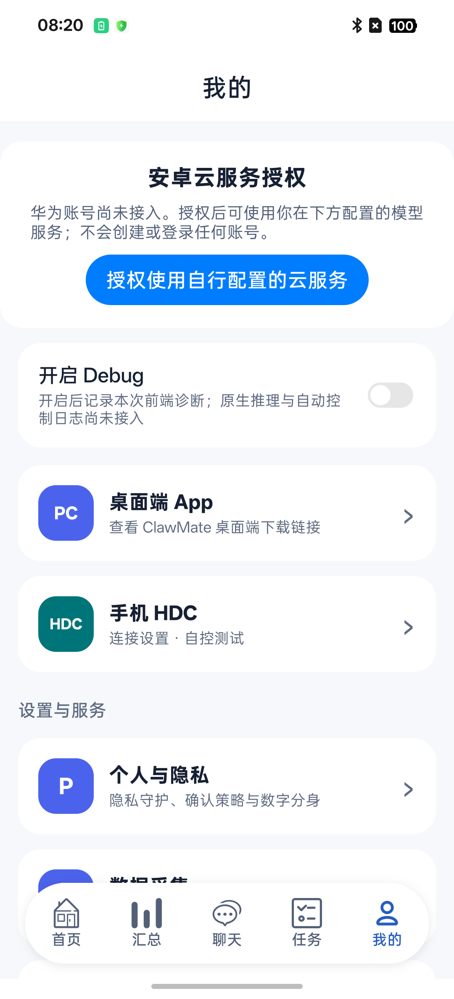
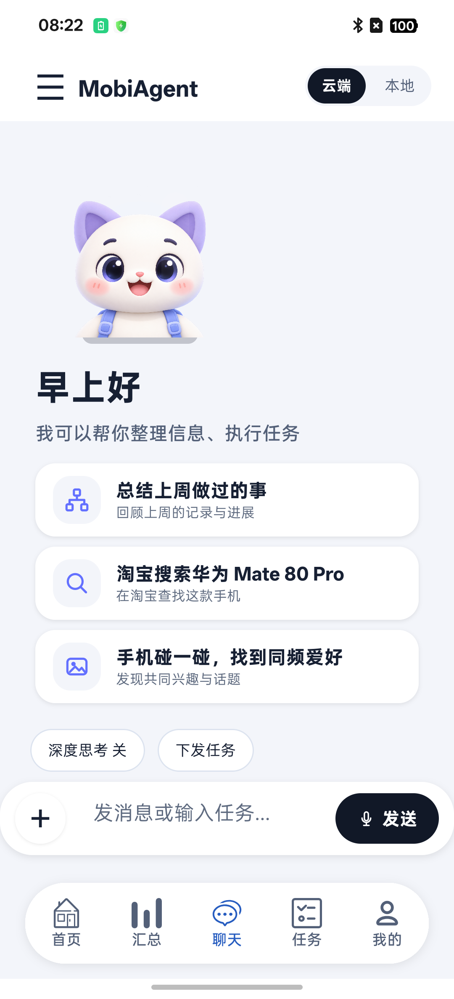
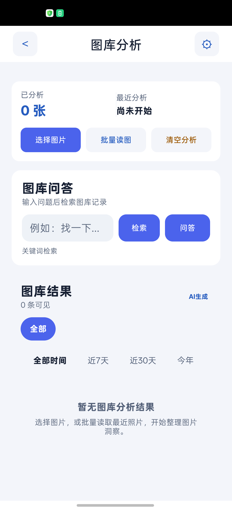
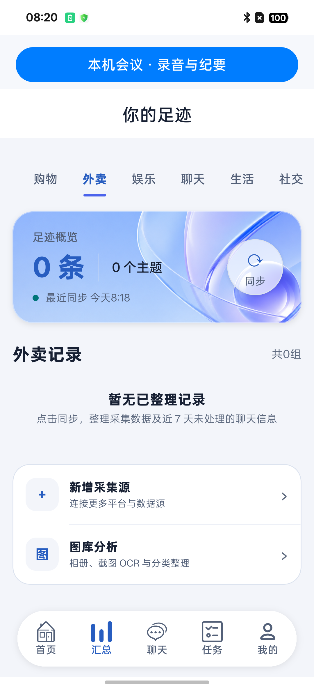
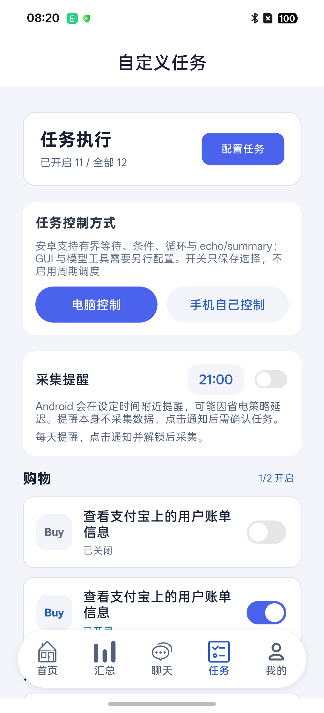
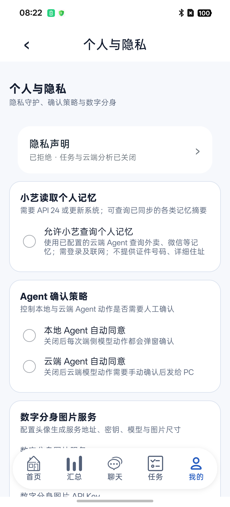

Android 共享版 · 0.3-integrated
让 ClawMate
帮上你的忙。
从第一条消息开始，逐步学会整理图片、找回记忆和运行任务。按你想做的事阅读，不必一次学完所有设置。
截图来自已核看的测试设备页面，不含私人消息或密钥。主导航截图采于 SH-18；图库图为更早版本，变化已在图注说明。分身等新功能以文字步骤为准。当前仍有平台能力限制，请查看对应章节。
按你想做的事，选一篇指南
搜索结果
没有匹配的章节。试试“模型”“图库”，或清空搜索查看全部章节。
返回手册首页页面未找到
这个章节地址无效或已不再提供，请从目录重新选择。
返回手册首页使用指南 / 01
第一次使用：先走通一条消息
先完成基础配置，再试文字聊天。图片和自动化可以稍后再开。


点击图片查看原图
入口：打开应用 → 首次引导 → 我的
- 首次打开时阅读引导和隐私说明，按页面按钮继续。是否允许云端处理，由你选择；拒绝后仍可浏览已有的本机内容。
- 打开底部我的，进入模型与智能体 → 云端 Planner/Decider，填写服务提供方给你的地址、模型名和密钥。不会填写时先看模型配置。
- 回到“我的”顶部，点授权使用自行配置的云服务；需要时在个人与隐私 → 隐私声明查看并确认云端处理范围。服务授权与隐私同意都可能影响请求。
- 进入聊天，选云端，输入“你好，请介绍一下你能怎样帮我整理信息”，点发送。
完成标志：消息进入会话，回复逐步出现。请求失败时应显示原因；只有看到回复，才算这次聊天成功。
没有模型服务账号或密钥？可以先看界面、浏览已有记录；当前 Android 版的本地聊天推理尚未接入，不能用“本地”代替云端聊天。
适用范围：本手册对应名称为“ClawMate 共享前端”的 Android 共享版。与旧版应用分开保存数据，不自动带入旧聊天、密钥或授权。界面中可能保留 MobiAgent 等名称。

使用指南 / 03
配置模型：地址、名称、密钥填哪里
模型服务负责生成回复。ClawMate 不会因为你点了授权，就自动给你一个模型账号。
入口：我的 → 模型与智能体 → 云端 Planner/Decider
| 页面字段 | 普通用户怎样理解 | 怎样填写 |
|---|---|---|
| Planner 服务 | 文字聊天、整理信息时使用的模型服务地址 | 使用提供方给出的 HTTPS 接口地址，不能填写网站登录页 |
| Planner Model | 具体使用哪个模型 | 填提供方给出的精确模型标识；首次使用建议明确填写 |
| Planner API Key | 访问这个服务的凭证 | 填你自己的密钥；不要复制界面的掩码圆点 |
| Decider 服务 / Model / API Key | 视觉工作流使用的模型配置 | 要运行图片问答工作流时，填能接收图片的服务与模型 |
- 准备好提供方给出的三项信息，再分别填写；名称相似的模型也可能具有不同能力。
- 完成字段修改后返回再进入，确认配置仍在。点测试 Planner并查看Planner 测试结果；测试需要授权、隐私同意及网络，可能产生提供方的调用费用。
- 测试成功后再发一条短消息。图库、分身有各自的设置，文字测试成功不等于这些服务也配置好了。
不要猜接口后缀。让服务提供方确认与应用兼容的接口地址及模型能力。手册不提供可直接使用的公共密钥。
遇到 401/403 类错误，先核对密钥、权限与账户状态；遇到模型不存在，核对 Model 字段；遇到连接或超时，核对地址与网络。保留错误文字，隐藏密钥后再反馈。
使用指南 / 04
聊天：发送、停止与找回会话
先用文字提问，再逐步尝试记忆查询和附件。


点击图片查看原图
入口：底部聊天 → 云端
- 输入清楚的问题，例如“把下面三件事整理成今天的待办：……”。点发送。
- 回复会逐步显示。查看思考或工具状态时，按页面的展开入口查看；正在处理不等于已完成。
- 不想继续等待时使用生成期间的停止入口。停止后已显示的文字可能保留；不要把半截回复当作完整答案。
- 点左上角三横线打开会话列表，新建会话或切换回已有会话。不同主题建议新建会话。
完成标志：回复结束且页面不再处于生成状态；离开后重新进入已有会话，可以查看已保存历史。
深度思考是模型相关选项，效果取决于服务支持，可能增加等待时间。长会话会按配置压缩较早上下文；显示“本地抽取”时，表示使用了后备摘要方式，不是模型摘要成功。完整历史仍保存在本机。
“下发任务”、淘宝搜索、碰一碰等卡片是界面入口或示例文案。当前 Android 共享版的聊天任务下发、跨应用 GUI 控制尚未接入，不能据此认为它会操作其他应用。可执行的工作流范围见任务章节。
使用指南 / 05
发图片给助手看
适合识别截图、读图和解释内容。需要支持图片的聊天模型。
入口：聊天 → 输入框左侧 + → 选择图片
- 从系统选图界面选择图片，每次最多4 张。先用一张不含个人信息的图片试用。
- 输入具体问题，例如“请列出图片里的三项信息”。确认选图和问题正确后发送。
- 阅读发送确认：核对服务地址、模型和图片数量。同意才会把处理后的图片发给配置的云端服务。
- 等待回复；如果模型不支持图片，换成支持图片的模型后重新尝试。
完成标志：该回合出现图片消息和模型回复。选图成功仅表示附件已准备好。
图片上传前会去除元数据并缩放，但图片里的文字、人脸等可见内容仍在。照片副本会保存在本机会话中。后续历史请求只发送文字，不自动重传旧图片；要继续问原图，可以重新附上图片。本回合图片聊天不运行工具。
提示图片准备失败或超时：重新选择较小且可正常打开的图片。取消确认则不会发送该批图片。
使用指南 / 06
图库：选图、暂停、继续与查找
从你主动选中的图片建立分析记录，不会自动读完整个相册。


点击图片查看原图
入口：汇总 → 图库分析；设置可从图库右上角齿轮或我的 → 数据采集进入
- 先配置图库 API Base URL、API Key 和模型；需要视觉理解时选择支持图片的模型。不要以为 Planner 配置会自动填到图库。
- 点选择图片或新建批次，在系统选图器中选图，每批最多9 张。
- 阅读私有副本说明和分析确认，核对目标服务、模型、剩余数量及是否使用远程向量服务，再开始。
- 观察完成、跳过、失败数量。要中断时点暂停；已经在处理的图片可能继续完成保存。
- 回到页面或应用重启后，点继续分析并重新确认。只处理尚未完成项，失败项可以重试。
- 在结果区按类别、时间筛选并打开条目。图库问答中，检索用来找记录，问答会基于检索结果生成回答，可能调用模型。
完成标志：出现具体分析条目；失败数量不应被当作完成。关键词预筛未命中的图片可能计入跳过。
图库保存去元数据的 JPEG 私有副本，日期记为导入日，不保留原始拍摄时间和位置。离开页面或进入后台会请求暂停，不保证后台持续运行。
“清空分析”会删除本应用的结果、批次进度和私有副本，不删除相册原图。想保留结果时先取消，不要用清空解决普通的网络错误。有旧批次时，新建前确认是否替换。
旧截图中的“批量读图”不表示 Android 已支持后台全相册扫描、PC/HDC 读图或自动跨应用采集。
使用指南 / 07
汇总与记忆：让已有信息能被找回来
会话记录、长期记忆和本机索引是不同的东西。


点击图片查看原图
查看：汇总 → 选择类别 → 打开记录；整理：我的 → 数据采集 → 聊天长期记忆与本机索引
- 先有实际聊天或采集记录，再打开聊天长期记忆与本机索引。
- 需要整理新信息时点同步聊天与采集记忆。确认框会说明将向哪个模型发送近 7 天未处理聊天文字、有限上下文及待整理日志；工具记录和推理不在该提取范围内。
- 只想重建已有记忆的检索结构时，点仅重建本机索引（无网络）。它不会生成缺失的模型摘要。
- 回到汇总，选择类别、打开分组查看；也可在云端聊天中问“查找我已整理记录中关于……的信息”。模型需要支持工具调用，查询返回的记忆内容可能进入本次云端对话。
完成标志：同步页面报告完成及索引事件数量，汇总中有可打开的实际记录。0 条可能只是没有待整理内容。
删除聊天不会自动删除已提取的长期记忆。取消同步会保留已完成批次。共享版不会读取旧应用的私有数据，也不会自动读微信。这里的“同步”不代表云备份或多设备同步。
找不到记录时，先核对是否已整理、日期和类别是否过窄，再尝试较短关键词。空结果不能证明现实中没有发生过这件事。
使用指南 / 08
首页：概览、推荐与陪伴
首页需要已有数据和相应模型配置，空白时先建立一条真实记录。
使用指南 / 09
任务与工作流：先保存，再运行，再看结果
开启任务只是选择它。是否成功执行，要看运行状态与回执。


点击图片查看原图
入口：任务 → 配置任务；工作流列表中可运行、图编辑和新建
- 先查看任务用途。初次使用选择不涉及其他应用控制的简单工作流；本机执行支持有界等待、条件、循环与 echo/summary。
- 修改时使用图编辑，或通过图新建创建流程；编辑后点保存 Workflow，确认出现保存成功提示。
- 回到列表点运行，观察运行中、失败或完成状态，查看步骤输出和运行文件。需要停止时点停止。
- 视觉问答工作流需配置 Decider 视觉模型，并选择本机图片；每次发送前核对确认框。工作流的跨应用 GUI 截图仍受限；本应用截图与单步规划使用下方独立入口。
完成标志：工作流有实际结束状态及对应输出。只有非空、真实的 summary 成功保存，才会形成相应采集日志；echo、失败和取消不会被当作成功采集。
“电脑控制 / 手机自己控制”及任务开关不代表已接通跨应用自动化，也不启动周期调度。GUI、HDC 和其他未接入工具会返回受限原因。
确认图片时不要长时间搁置。工作流有执行时限，约一分钟后可能已结束；即使后来点确认也不会接收迟到结果。看到“所属任务已结束”，先读原始原因，再重新运行并及时确认。
删除 Workflow 会删除任务及配置，不能恢复；清理运行文件、daily-log 与删除任务是不同操作，先读确认框再决定。
本应用截图与单步规划
入口：任务执行页 → 本应用截图与单步规划
- 填写任务，点击截取本应用界面。只截取当前 ClawMate 页面，预览显示截图；不读取其他应用，也不会自动上传。截图范围不含系统键盘。
- 查看预览，确认没有要保留在本机的私人信息。需要规划时，在“我的”的云端 Planner/Decider 中配置 HTTPS Decider 视觉模型，并完成云服务授权与隐私同意。
- 点击确认截图并请求单步规划，核对任务、服务地址和模型。只有再点发送截图，该图与任务才会发送到你配置的服务。
- 页面展示模型建议及参数。建议不是已执行动作，模型声称完成也不代表任务实际成功。这些模型建议不会自动点击、输入或打开其他应用，也未接入自动循环；下方的跨应用手动控制是独立的本机流程。
完成标志：截图预览可见；请求成功时显示“模型建议（未执行，非任务成功回执）”。结果仅在此页显示，不生成工作流成功日志。
可以取消并清除截图。离开页面会取消请求、丢弃迟到结果并删除预览临时文件；意外终止进程可能遗留系统缓存，可通过 Android 应用设置清缓存。已发送的数据不能收回。界面变化后应重新截图；截图失败、受保护窗口、配置缺失或 JSON 无效时，按页面原因修正后重试，不要把错误当成功。
跨应用手动控制（Android 14及以上）
入口：任务 → 本应用截图与单步规划 → 页面下方“跨应用手动控制”
此功能使用系统无障碍服务。Android授予的窗口/手势权限范围较大；ClawMate再按每次会话限制为一个应用。当前代码已接入，2026年11月2日在 OPPO PKB110 上通过自建测试应用的截图预览、点位映射点按、滑动取消/执行及离开应用停止检查；多厂商、真实业务页面和自动任务仍待验收。无需云服务或模型密钥，截图不上传、不保存到文件，也不会自动执行上方的模型建议。
- 点击无障碍权限说明，阅读后决定是否去系统设置。在系统无障碍服务列表中找到ClawMate 按次界面控制并自行开启；取消说明不会修改系统权限。部分OPPO设备随后会弹出“保持开启/关闭无障碍”安全提示，请本人阅读并决定；系统安全确认尚未完成时不要把服务声明或连接当作控制成功。设备低于Android 14时不要开启此权限，仍可使用本应用截图。
- 回到ClawMate，点击选择应用并开启手动控制。从系统可启动应用中选择一个，核对应用名称与包名，再点打开并开始会话。应用列表最多显示200个应用。
- 目标应用进入前台后，右侧显示控制面板和停止控制。会话最长120秒、最多20次动作，不保存长期允许列表。切换到别的应用、锁屏、到期或服务断开会停止。
- 点截图 / 点按查看该应用窗口的本机截图。若想点按，在预览中选择位置，再确认具体坐标；预览留白和控制面板覆盖的位置不可操作。确认期间画面变化时会拒绝执行。
- 向上滑动、向下滑动和返回均需要另行确认。系统确认手势完成只代表手势提交/完成，不代表业务任务成功。返回可能离开目标应用并结束会话。
- 需要结束时点击停止控制；它阻止后续操作，已提交的80/400毫秒短手势仍可能完成。之后手动回到ClawMate点刷新控制状态。不再使用时可在系统设置中关闭该无障碍服务。
受保护页面、分屏、多窗口、截图尺寸不匹配、频繁截图或窗口变化时会停止并说明原因。画面核验采用严格像素一致性，动画和动态内容也可能导致拒绝；检查当前页面后重新开启会话，不会自动重试。窗口核验与系统手势提交之间仍可能发生系统切换竞态，多厂商和复杂页面尚待专项验收。当前不支持文字输入、横向滑动、跨应用云规划、自动动作循环或业务结果提取。
使用指南 / 10
每日提醒：通知到达后还要确认
提醒帮你记得处理任务，不会在通知到达时直接采集。
入口：任务 → 采集提醒
- 先配置并检查需要运行的任务，再设置提醒时间，打开提醒开关。
- Android 提示通知权限时，按需要允许。授权后若提醒未开启，返回页面再开启一次。
- 通知出现后点它，解锁手机并阅读任务确认；确认才会开始执行，取消则不执行。
- 回到任务页查看实际执行状态。失败后可手动运行，不要反复点同一条旧通知。
省电策略可能延后通知，不能保证准点。没有收到时，检查 Android 系统设置中的本应用通知权限与通知渠道；强行停止应用后，需重新打开应用。也要确认提醒开关实际处于开启状态。
提醒和执行分开：开启提醒不等于开启后台全自动采集，任务配置中的开启数量也不是每日成功数量。
使用指南 / 11
本机会议：录音、转写、纪要与保存
先准备本地模型，再录音或导入音频；会议与汇总副本分别保存。
入口：汇总 → 本机会议 · 录音与纪要
- 首次进入等待会议服务就绪。按页面模型管理提示准备基础转写模型；模型权重不会随应用全部预装。下载需要网络与存储空间；无下载清单的模型需按页面说明手动准备。
- 准备录音时先结束聊天语音识别或朗读，再按开始。首次授予麦克风权限后，再次按开始才启动录音。也可通过页面文件入口导入音频。
- 录音可暂停、继续、结束；通过历史、搜索进入已有会议，查看正文、按段回听并修改文字或说话人。
- 要精修或生成纪要，先按页面选择并准备相应模型，再启动任务。长任务可取消；失败后查看原因再重试。
- 要把内容放进 ClawMate 汇总，点保存到本机记录，核对预览后保存；结果归入文档类别。
完成标志：会议有可打开的转写正文；保存副本后，汇总中出现对应文档。同一份交接副本重复保存不会新增重复记录。
关闭会议页不会自动停止正在进行的录音；需要结束时返回会议页明确结束。长时间锁屏、来电中断和不同手机的录音行为仍需实际确认。
“保存到本机记录”保存的是指定版本的正文副本，不含录音，也不自动跟随原文更新。原会议编辑或删除与汇总副本分开管理；需要新版时重新预览保存。不自动上传到云记忆或创建任务。
使用指南 / 12
数字分身与语音
分身图片服务、聊天模型、语音合成分别配置。
分身配置：我的 → 个人与隐私 → 数字分身图片服务；生成入口：首页概览的数字分身入口
- 填写分身图片服务地址、密钥、模型与图片尺寸。文本聊天服务不一定能生成图片。
- 从首页进入分身生成流程。使用照片模式时选择参考图，阅读发往哪个服务的确认后决定是否继续。
- 生成后查看结果。当前前景处理主要针对人物，动物、物体、动漫及复杂发丝背景的效果不能保证。
- 在聊天顶栏切换默认形象 / 我的分身。没有生成结果时先回首页准备；图片缺失或损坏时会回退默认猫助手。
聊天切换分身只改变显示形象，不会因此上传你的分身图片，也不改变当前输入或模型请求。
使用 MiMO 云端朗读
- 打开我的 → 模型与智能体 → 语音合成服务，填写兼容 MiMO 协议的 HTTPS 地址、API Key 和模型，选择音色或朗读角色；这些设置独立于 Planner。
- 需要边生成边听时打开流式语音合成；关闭时完整取得 WAV 后播放。确认云服务授权和隐私同意后，聊天回复文字会发到该服务合成语音。
- 在助手回复上点朗读，播放时可暂停、继续；生成中可取消。退后台、切换会话或撤回授权会停止当前请求和播放。
- 完整合成结束后，音频保存在本机会话私有目录。使用重播缓存语音播放该副本，不再向云端请求；删掉对应会话也会清理其音频资产。
完成标志：消息从生成中进入播放，结束后可重播缓存。只收到部分音频或请求失败，不会被标为完整缓存。
地址、密钥或模型只填了一部分时会提示补齐配置。检查错误后可重试；流式服务在尚未收到音频时失败，会尝试一次 WAV 合成，已收到音频后失败则直接报告。缓存损坏可重新合成。语音最长受文本和音频大小限制，请先试一条短回复。
语音输入与系统朗读
在聊天输入区使用麦克风入口，按系统提示授予权限。识别文本出现后先检查内容，再发送。语音合成配置全为空时，回复由系统 TTS 朗读，可用性取决于手机的服务和语音包。
系统 ASR（语音转文字）是否联网，由你选择的识别服务决定，不能一概视为离线。真人识别、真实 MiMO 音质、语音与分身动画同步、多厂商及 TalkBack 体验仍待验收。
使用指南 / 13
设置、隐私与数据清理
看不懂的高级选项先保留。需要哪项能力，再配置哪一组。


点击图片查看原图
入口：我的 → 设置与服务（向上滑动查看全部分组）
| 分组 | 常用用途 |
|---|---|
| 个人与隐私 | 查看隐私声明、确认策略与数字分身图片服务 |
| 数据采集 | 图库配置、OCR 相关设置、长期记忆与本机索引 |
| 模型与智能体 | 云端 Planner/Decider、上下文设置；本地推理选项仍有限制 |
| 任务与自动化 | 任务参数、Workflow 和运行日志相关设置 |
| 存储与关于 | 查看版本和存储，按需清理指定产物 |
撤回隐私同意或云服务授权会阻断新请求并取消已注册请求，但不能撤回已经发送给服务提供方的数据。如还需删除远端记录，应按该提供方的规则处理。
自动同意选项只影响相应确认策略，不会让未支持的功能变为可用。刚开始使用时建议保留人工确认。
清理前先看删除对象。图库分析、聊天、长期记忆、会议原件及会议副本有不同生命周期；不能把其中一项删除当作“已清空所有数据”。当前没有已验收的旧版数据一键迁移流程。
反馈问题时可提供应用版本、入口、操作步骤与完整错误文字。截图前隐藏 API Key、服务中的敏感参数、个人消息和照片。Debug 为诊断入口，普通使用不必开启。
使用指南 / 14
哪些能用，哪些还有限制
页面里能看到一个选项，不一定表示当前 Android 版已经具备对应能力。
| 功能 | 当前边界 | 怎样继续 |
|---|---|---|
| 云端聊天、流式回复、图片聊天 | 已接入，需自行配置并授权；真实模型效果取决于服务 | 先测试 Planner，再试短消息和公开图片 |
| 图库、分类、记忆整理 | 支持主动选图和有界批次；整理可能发送数据到配置服务 | 核对确认框，失败后继续或重试 |
| 工作流 | 支持有限本机步骤及确认后的图片视觉问答 | 查看实际步骤回执；GUI 不能按成功处理 |
| 本机会议 | 已接入本地转写与保存链路，模型需另行准备 | 先检查模型状态，再录音或导入 |
| 分身 | 照片确认、人物前景与聊天显示已接入；真实生成质量待验收 | 先查看生成结果，必要时切回默认形象 |
| MiMO 聊天语音 | 流式合成、WAV 缓存和本地重播已接入；真实服务音质待验收 | 在语音合成服务中配置并授权；文字会发往你配置的服务 |
| 本地聊天模型、MNN/HiAI | 尚未完成 Android 能力接入 | 文字聊天使用已配置的云端；会议本地转写不等于本地聊天可用 |
| 本应用截图与单步规划 | 预览、逐次确认与 Decider 建议已接入；真实模型质量待验收，不执行动作 | 从任务页进入，确认图片和服务后发送 |
| 跨应用手动控制 | 代码与权限入口已接入，OPPO 自建应用受控手势场景已通过；多厂商与真实业务仍待验收；Android 14及以上、按次单应用、逐次手动确认 | 从任务页下方进入，系统授权与会话选择分开；不使用模型 |
| GUI自动循环、HDC、微信自动采集、Python 外部服务 | 尚未接入或受限；会议内置 Python 不代表通用桥接可用 | 主动选择图片或导入音频；不要反复修改密钥尝试解锁 |
| 小艺、华为账号、端侧 Embedding 等遗留选项 | 不能按鸿蒙能力推断 Android 已支持 | 以实际适配提示为准；本机关键词检索可先使用 |
当前验证以 OPPO Android 16 手机为主。其他厂商、旧版 Android、长期后台运行、无障碍和完整 16KB 运行稳定性仍有待验收；这份手册不把它们列为已经通过。
使用指南 / 15
遇到问题，先从这里查
优先查看错误文字，再排查配置和授权。
点发送没回复 / 提示未授权
确认正在云端聊天，Planner 地址和模型已填写；再检查“我的”顶部云服务授权以及个人与隐私中的隐私声明。测试 Planner 后再发短消息。被取消或受限的请求不能视作成功。
图库一直是 0 条
系统选图只是第一步，还需确认分析。检查图库自己的模型配置、失败/跳过数量和日期筛选。先分析一张公开图片；不用清空全部结果。
记忆找不到 / 首页没有推荐
先建立真实记录，并运行记忆整理。仅重建本机索引不会凭空生成记忆。查询时放宽日期和关键词；推荐还需要相应模型及授权。
任务开启了，却没有自动执行
开关保存的是选择，不是周期调度。手动点运行并检查回执；每日通知需要点击、解锁和确认，GUI 等受限步骤不会自动变得可执行。
会议不能开始 / 没有转写
确认基础模型准备好、麦克风权限已授予，授权后再按开始；先结束聊天语音。导入音频时检查格式和页面错误，纪要还需相应模型。
功能提示尚未接入 / 我的分身回退猫助手
前者查看能力边界，不是反复重装或填写密钥就能修复。分身回退时检查是否已生成、当前资产是否可读；可先用默认形象继续聊天。
需要反馈时，提供“应用版本 → 从哪个入口进入 → 做了什么 → 预期看到什么 → 实际错误”。请隐藏凭据和私人内容。